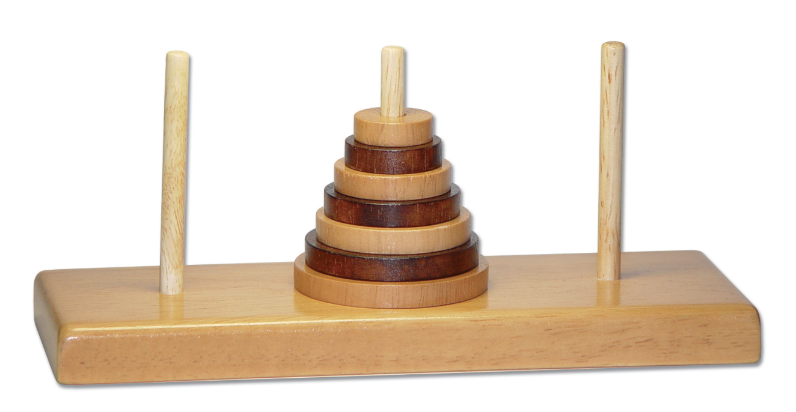

Introduction
Tower of Hanoi is a classic puzzle game invented by French Mathematician Edouard Lucas in 1883. It consists of 3 rods and different sized disk stacked in canonical order. The aim of the game is to move the entire stack of conical ordered disk from one tower to another tower one step at a time. The minimum number of moves required in order to solve the problem all the depends on the number of disk. If there are 3 disks, then it will require 7 move to complete the game. The size of the problem depends on the total number of disk.
History
History The Tower of Hanoi, also relates to the story about an Indian temple located in Kashi Vishwanath. It has been recorded that the Brahma also known as a god in Hinduism, placed a 64 golden disk on the one of the three needle during the creation of the world. Brahmin also known as priests, under the command of an ancient prophecy, have been moving these disk in accordance with unchangeable rules of Brahma. Due to these reason, the puzzle is also known as Tower of Brahma puzzle. The ancient puzzle was created when the world was created and according to the legend when the priest completes his last move, the world will end.
Rules
• Move one disk at a time. • Only the top most disk can be moved from one tower to another. • Do not place larger disk on top of smaller disk.